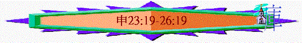

|
持
得
豐
盛
之
關
鍵 |
|||||
|
勇敢踏上 |
謹守遵行 |
選擇上好 |
追念失敗 |
得蒙賜福 |
效法神僕 |
|
１－３ |
４－２６ |
２７－３０ |
３１－３２ |
３３ |
３４ |
3.謹守遵行的細則(12-26)
C.生活條例(12-26)
e.要有情有義(23:19-25:10)
〜人在地上生活，有一定自由，做一些事情可能不是犯很大罪，也好像合理，但未必是最有情義，作為屬神選民，對人應顯露一份恩典，一份情分，一些道義。
(1)對外來奴僕→同情愛護
〜在理方面，若有奴僕(應是從外邦民族出來)逃離主人，奴僕應是錯的，按當時規矩，應被殺。但以前的奴僕沒有任何尊嚴，一生被主人轄制，主人可苦待他，他已受了很多苦，若此時交出，必死無疑，倒不如接納他，同情他(何況選民以前在外邦地也作過奴僕)，給他合適地方居住。在新約，保羅也要求腓利門收納曾經逃離他的奴僕----阿尼西母。
(2)對同族兄弟→不可取利
「你借給你弟兄的，或是錢財或是糧食，無論什麼可生利的物，都不可取利。借給外邦人可以取利，只是借給你弟兄不可取利。這樣，耶和華你神必在你所去得為業的地上和你手裡所辦的一切事上賜福與你。」23:19-20
(3)對天上真神→誠實還願
「你向耶和華你的神許願，償還不可遲延；因為耶和華你的神必定向你追討，你不償還就有罪。」23:21
〜神是天父，甚麼也擁有，祂滿有恩典、體諒，但人不可濫用祂的恩情，在道義，誠實中，許了願要還願，在神面前要作誠實的人。
(4)對地上恩人→不存貪心
「你進了鄰舍的葡萄園，可以隨意吃飽了葡萄，只是不可裝在器皿中。你進了鄰舍站著的禾稼，可以用手摘穗子，只是不可用鐮刀割取禾稼。」23:24-25
〜人已經施恩給予你可以在葡萄園吃，但不可貪心，在道義上，不可多取及濫用別人給你的恩情，拿器皿裝載，令人有額外的損失。
(5)對新娶之妻→使她快樂
「新娶妻之人不可從軍出征，也不可託他辦理什麼公事，可以在家清閒一年，使他所娶的妻快活。」24:5
〜按理人要工作，男丁應承擔軍任，但若有新娶之妻，則可不從軍，不辦公事一年，目的是對妻子顯情份，使她快活。當然，不代表他沒有工作，因當時從軍或辦理公事可能需多個月甚至多年，所以給他們免役，但人仍可在自己所居住地工作及記念事奉真神。
(6)對欠債弟兄→為他設想
(A)留有餘地
「不可拿人的全盤磨石或是上磨石作當頭，因為這是拿人的命作當頭。」24:6
〜借款人往往要提供某種抵押品，假如沒有能力償還，抵押品便沒收，但聖經說，不能以磨石作為抵押品；磨碎縠粒主要用取兩塊磨石，下面那塊是固定的，而上面則可轉動，百姓每天會用磨石做麵粉，以作生活所需之用，若拿了其中一部份磨石，相等拿去他們每天基本的需要了。
(B)給他體面
「你借給鄰舍，不拘是什麼，不可進他家拿他的當頭。要站在外面，等那向你借貸的人把當頭拿出來交給你。」24:10-11
〜債主不能入屋，隨便拿借款人的家財作當頭，需站外面等，也給他尊嚴，等他自願出來將當頭交給債主。
(C)顧念對方
「他若是窮人，你不可留他的當頭過夜。日落的時候，總要把當頭還他，使他用那件衣服蓋著睡覺，他就為你祝福；這在耶和華你神面前就是你的義了。」24:12-13
(7)對窮乏雇工→母有虧欠
「困苦窮乏的雇工，無論是你的弟兄或是在你城裡寄居的，你不可欺負他。要當日給他工價，不可等到日落，因為他窮苦，把心放在工價上，恐怕他因你求告耶和華，罪便歸你了。」24:14-15
〜對窮困的雇工，也要顧念他們感受，不可遲將工資給他，以致他內心愁苦，也不可虧欠對方，要將他當得在日落前給他。
(8)對無靠之人→額外施恩
(A)在欠債上額外施恩
「你不可向寄居的和孤兒屈枉正直，也不可拿寡婦的衣裳作當頭。」24:17
〜按理，人可以向窮乏弟兄拿衣裳作當頭，只要在日落前把衣服還給他就可以，但對寡婦，卻有額外恩典，因為她們是無所靠，是女性，不可拿她們的衣裳作當頭。
(B)在生活上額外施恩
「你在田間收割莊稼，若忘下一捆，不可回去再取，要留給寄居的與孤兒寡婦。這樣，耶和華你神必在你手裡所辦的一切事上賜福與你。」24:19
〜按理，人在日間收割莊稼，忘下一捆，他應可再回去取，因是屬於他的，但對寄居，孤兒寡婦無靠的人，卻額外施恩，要留下不自取給他們。
(9)對受罰之人→不可過份
「惡人若該受責打，審判官就要叫他當面伏在地上，按著他的罪照數責打。只可打他四十下，不可過數；若過數，便是輕賤你的弟兄了。」25:2-3
〜惡人應受嚴厲刑罰，但不可過份，應按罪照數打，只可打他四十下，不可過數。
(10)對死去兄弟→當盡本分
「弟兄同居，若死了一個，沒有兒子，死人的妻不可出嫁外人，他丈夫的兄弟當盡弟兄的本分，娶他為妻，與他同房。婦人生的長子必歸死兄的名下，免得他的名在以色列中塗抹了。那人若不願意娶他哥哥的妻，他哥哥的妻就要到城門長老那裡，說：『我丈夫的兄弟不肯在以色列中興起他哥哥的名字，不給我盡弟兄的本分。』」25:5-7
〜兄弟死去，作為親人，應盡本分，照顧親人留下的妻子，娶他為妻，以免弟兄的名及產業、地土在以色列中塗抹。
f.行出公義
(1)嚴厲懲罰犯罪之人
「若遇見人拐帶以色列中的一個弟兄，當奴才待他，或是賣了他，那拐帶人的就必治死。這樣，便將那惡從你們中間除掉。」24:7
「若有二人爭鬥，這人的妻近前來，要救他丈夫脫離那打他丈夫之人的手，抓住那人的下體。」25:11
(2)公允對待無罪之人
「不可因子殺父，也不可因父殺子；凡被殺的都為本身的罪。你不可向寄居的和孤兒屈枉正直，也不可拿寡婦的衣裳作當頭。」24:16-17
(3)公平進行買賣交易
「你囊中不可有一大一小兩樣的法碼。你家裡不可有一大一小兩樣的升斗。當用對準公平的法碼，公平的升斗．．．」25:13-15
〜人在進行貿易中，不可行詭詐，要公平，在量度方法及其上不可有偏差，有欺騙成份。
(4)徹底除滅不敬民族
「你要記念你們出埃及的時候，亞瑪力人在路上怎樣待你。他們在路上遇見你，趁你疲乏困倦擊殺你儘後邊軟弱的人，並不敬畏神。所以耶和華你神使你不被四圍一切的仇敵擾亂，在耶和華你神賜你為業的地上得享平安。那時，你要將亞瑪力的名號從天下塗抹了，不可忘記。」25:17-19
「那時，亞瑪力人來在利非訂，和以色列人爭戰。摩西對約書亞說：「你為我們選出人來，出去和亞瑪力人爭戰。明天我手裡要拿著神的杖，站在山頂上。」」出17:8-9
〜在出埃及記中，亞瑪力人曾在選民逃離埃及，困倦中攻擊選民，他們並不敬畏那位曾行十災，曾使選民過紅海的神，所以神要求選民要徹底將亞瑪力的名號(代表亞瑪力人)從天下塗抹，除滅他們。
g.勿忘神恩(26:1-15)
(1)勿忘真神的提拔
「你要在耶和華你神面前說：『我祖原是一個將亡的亞蘭人，下到埃及寄居。他人口稀少，在那裡卻成了又大又強、人數很多的國民。埃及人惡待我們，苦害我們，將苦工加在我們身上。」26:5-6
「以撒打發雅各走了，他就往巴但亞蘭去，到亞蘭人彼土利的兒子拉班那裡。拉班是雅各、以掃的母舅。」創28:5
〜以色列的先祖雅各曾逃往亞蘭地，所以他們也可算是將亡的亞蘭人，後在埃及中受苦，但神提升他們不再作奴僕，更得應許之地。選民不可忘記神的提拔與拯救。
(2)獻上初熟的土產
「你進去得了耶和華你神所賜你為業之地居住，就要從耶和華你神賜你的地上將所收的各種初熟的土產取些來，盛在筐子裡．．．耶和華啊，現在我把你所賜給我地上初熟的土產奉了來。』隨後你要把筐子放在耶和華你神面前，向耶和華你的神下拜。」26:1-10
(3)顧念周圍的鄰舍
「每逢三年，就是十分取一之年，你取完了一切土產的十分之一，要分給利未人和寄居的，與孤兒寡婦，使他們在你城中可以吃得飽足。你又要在耶和華你神面前說：『我已將聖物從我家裡拿出來，給了利未人和寄居的，與孤兒寡婦，是照你所吩咐我的一切命令。你的命令我都沒有違背，也沒有忘記。」26:12-13
〜人在恩中，不可忘記事奉人員，要無靠的寄居者及孤兒寡婦，將十分之一分給他們。
總結(26:16-19)
(1)謹守遵行的要求
「耶和華你的神今日吩咐你行這些律例典章，所以你要盡心盡性謹守遵行。」26:16
(2)謹守遵行的原因
(A)真實關係的明証
「你今日認耶和華為你的神，應許遵行他的道，謹守他的律例、誡命、典章，聽從他的話。耶和華今日照他所應許你的，也認你為他的子民，使你謹守他的一切誡命。」26:17-18
〜神是我們的神，我們是神的子民，這美好關係的明証在乎人肯不肯守神誡命，以神為神，敬神、愛神的子民自然守神吩咐，不屬神，不是真正的子民，也不會守的。
(B)超然分別的肯定
「又使你得稱讚、美名、尊榮，超乎他所造的萬民之上，並照他所應許的使你歸耶和華你神為聖潔的民。」26:19
〜選民能成為聖潔的民(分別出來的子民)，在乎他有沒有守神吩咐，若行出來，神會賜福，使他們在外邦中得尊貴，也使他們真正在世俗罪中能行出聖潔，顯出分別子民的特質。